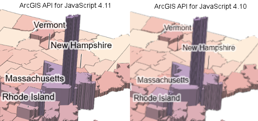
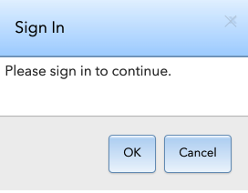
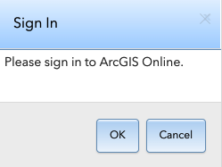
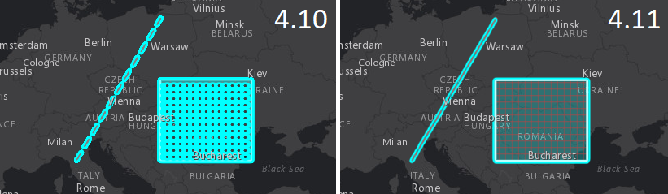

Editor widget
Editing in the MapView is now supported using the Editor widget. This widget provides an out-of-the-box experience to help streamline the editing experience within a web application. Prior to this release, while editing was possible it required a bit more work. For example, attribute editing could be handled via the FeatureForm widget. You could also use the FeatureTemplates widget to display templates from one or more feature layers. Prior to this version, they had to be used in conjunction with FeatureLayer.applyEdits as it enables an end user the ability to update a feature.
At 4.11, we combined all this editing functionality into one Editor widget. This does not mean that these other widgets are going away. Rather, it gives more flexibility to the developer in regards to web application editing.
The Editor widget has two Workflows, i.e. create and update. These allow you to either add features or edit and/or delete existing features within an editable feature layer. The widget automatically recognizes which feature layers within the map that are editable.

See the Edit features with the Editor widget and Editor widget with configurations samples for examples.
GeoJSONLayer
The API now supports GeoJSONLayer in both 2D MapViews and 3D SceneViews. GeoJSON is a format for encoding a variety of geographic data structures. See the Add a GeoJSONLayer to your map sample to learn more about how this layer works.
Drawing in 3D
You can now draw graphics with point, line and polygon geometries in a SceneView. The Sketch widget provides out-of-the-box functionality for creating and updating graphics in a SceneView. Change the MapView class with SceneView in the Sketch widget sample to draw graphics on a globe.
A more customized 3D drawing experience is possible by setting 3D symbols on the SketchViewModel. This can be useful for example to draw extruded building footprints or to draw points with volumetric point symbols. The Sketch in 3D sample explains how to draw with custom symbols in a SceneView.
3D point transform tool
As part of the update operation in the SketchViewModel, a point with ObjectSymbol3DLayer can be moved, rotated and scaled using the 3D point transform tool. The tool is activated when the point graphic is being updated and it adds intuitive handles to manipulate the graphic. Import glTF 3D Models sample shows how to use this tool.
GLTF support
3D models in glTF format can now be visualized in a SceneView. If the model is a symbol for a point (like a tree or a bus stop) then you can set it as a resource for ObjectSymbol3DLayer. Models that represent 3D geometry (like a geological model or a building) can be converted to a Mesh geometry using the Mesh.createFromGLTF() method. Read how to add your own 3D models in the Visualizing points with 3D symbols guide topic and see how to import glTF 3D models in this sample.
Dot density support
You can use the DotDensityRenderer to create dot density visualizations for polygon layers. DotDensityRenderer randomly draws dots that represent a fixed value of an attribute or a subset of attributes within each polygon to visualize the relative density of the attribute. Check out the Dot density sample to learn more.
Smart Mapping updates
You can now generate a HeatmapRenderer using the Heatmap renderer creator module. This allows you to create a nice heatmap without manually setting your own color scheme or configuring how those colors correspond to pixel intensity values.
FeatureLayer updates
Time support
At this release, we added the initial support for time-enabled FeatureLayers. You can get time information associated with a layer by checking its timeInfo property. Both server and client-side queries now return results for a given time extent. Time also can be applied to client side filters and effects.
Table support
Tables can be loaded into an application using FeatureLayer instance and setting the url property to the REST endpoint of a non-spatial table. See the FeatureLayer overview for more information.
Client-side filtering and effects
FeatureFilter
At this release, we added support for client-side filtering in both 2D and 3D. This is made possible through setting FeatureLayerView.filter. Only the features that satisfy the filter conditions will be displayed on the view. Features can be filtered on the client side based on attributes, time, geometry and distance. See Filter features by attributes.
Additionally in 3D you can use client-side spatial filters on SceneLayers. See the Filter features by geometry with SceneLayer sample to find out how to set a filter on a SceneLayerView.
FeatureEffect
We also added support for client-side feature effects in 2D. FeatureEffect allows for the selection of features via a filter, and an insideEffect and outsideEffect can be applied those features that respectively pass or fail the filter requirements. An effect can be specified on a FeatureLayerView through its effect property. See Apply effects to features sample.
Expression-based visibility for FeatureForm
The FeatureForm widget supports setting visibility on specific fields and grouped fields. The visibility is controlled by an Arcade expression set using either the FieldConfig's or FieldGroupConfig's visibilityExpression property. The expression evaluates to either true | false and if true, will display the configured field or grouped fields.
See the Advanced Attribute Editing sample for a working example.
3D rendering in high resolution
SceneView now takes advantage of the HiDPI displays to render graphics at a higher resolution, based on the devicePixelRatio browser property. In the screenshot below you can see a 3D population map rendered on a Retina display using the current version of the ArcGIS API for JavaScript and the previous one.

This feature is enabled on desktop devices for scenes with the qualityProfile set to high.
Hit test improvements
SceneView.hitTest now returns all graphics (including graphics draped on the terrain) that intersect the specified screen coordinate. Setting parameters like include or exclude allows you to define the layers that will be used for the hitTest. The result of a hitTest returns additional information like distance to the hit point on the graphic or distance to the ground hit. The SceneView - hitTest sample shows which graphics are hit and how you can use the distance to mark the point where the graphic was hit.
Disable shadows for a symbol
Using the castShadows property you can now specify which symbols should cast shadows. See the SceneView - shadow and lighting settings sample to learn how to disable shadows on individual symbol layers and how to set lighting options in a SceneView.
Access data in popups with Arcade expressions
You can author Arcade expressions for popups that access features from any layer in the map. This is made possible through the FeatureSet capabilities introduced at Arcade version 1.5. This means you can display information about the selected feature and its relationship to other features in the same layer or other layers. This includes the ability to check spatial relationships using geometry functions.
UI update to OAuth sign-in dialog
The UI of the OAuth popup confirmation dialog has been slightly updated to reflect where the user is signing into.
oAuthPopupConfirmation UI - pre 4.11 | oAuthPopupConfirmation UI - 4.11 |
|---|---|
|  |  |
Better WebMap support
In this release, we added support for time. This means most web maps can now be read using the 4.x API. Not yet supported web map features include WFS, clustering, and temporal renderers for StreamLayer.
Support for Ukrainian locale
Version 4.11 adds support for the Ukrainian (uk) locale. See Localization topic for more information about using different locales.
API updates and enhancements
- Added support for hitTest on labels in SceneView. If a label intersects the screen coordinates, then the graphic associated with the label is returned in the hitTestResult.
- Added support for
iconClassandlabelproperties of all widgets to be overridden by the user instead of being read-only properties. - Added support for 2D geodesic measurements for 71 solar system planets and moons (including Earth) using the AreaMeasurement and DistanceMeasurement widgets.
- Navigation using WASD keys is now supported in SceneView. Read more about keyboard navigation in the SceneView navigation section. The sample "Look around camera position" showing how to change tilt and heading using WASD keys was removed.
- Removed GraphicsLayer from appearing in the legend displayed from the PrintTask by default. Use the LegendLayer class to add
GraphicsLayerto the legend. - Added class esri/geometry/support/MeshMaterial.
- Added class esri/geometry/support/MeshTexture.
- Added class esri/layers/GeoJSONLayer.
- Added class esri/layers/support/fieldUtils.
- Added class esri/layers/support/TimeInfo.
- Added class esri/popup/content/AttachmentsContent.
- Added class esri/popup/content/BarChartMediaInfo.
- Added class esri/popup/content/ColumnChartMediaInfo.
- Added class esri/popup/content/Content.
- Added class esri/popup/content/FieldsContent.
- Added class esri/popup/content/ImageMediaInfo.
- Added class esri/popup/content/LineChartMediaInfo.
- Added class esri/popup/content/MediaContent.
- Added class esri/popup/content/PieChartMediaInfo.
- Added class esri/popup/content/support/ChartMediaInfoValue.
- Added class esri/popup/content/support/ChartMediaInfoValueSeries.
- Added class esri/popup/content/support/ImageMediaInfoValue.
- Added class esri/popup/content/TextContent.
- Added class esri/popup/content.
- Added class esri/popup/ExpressionInfo.
- Added class esri/popup/FieldInfo.
- Added class esri/popup/LayerOptions.
- Added class esri/popup/RelatedRecordsInfo.
- Added class esri/popup/support/FieldInfoFormat.
- Added class esri/popup/support/RelatedRecordsInfoFieldOrder.
- Added class esri/renderers/DotDensityRenderer.
- Added class esri/renderers/smartMapping/creators/heatmap.
- Added class esri/renderers/smartMapping/statistics/heatmapStatistics.
- Added class esri/renderers/smartMapping/symbology/heatmap.
- Added class
esri/renderers/StretchRenderer. - Added class esri/renderers/support/AttributeColorInfo.
- Added class esri/symbols/support/symbolUtils.
- Added class esri/tasks/support/AlgorithmicColorRamp.
- Added class esri/tasks/support/ColorRamp.
- Added class esri/tasks/support/MultipartColorRamp.
- Added class esri/TimeExtent.
- Added class esri/views/2d/layers/BaseLayerViewGL2D.
- Added class esri/views/draw/Draw.
- Added class esri/views/draw/DrawAction.
- Added class esri/views/draw/MultipointDrawAction.
- Added class esri/views/draw/PointDrawAction.
- Added class esri/views/draw/PolygonDrawAction.
- Added class esri/views/draw/PolylineDrawAction.
- Added class esri/views/draw/SegmentDrawAction.
- Added class esri/views/layers/GeoJSONLayerView.
- Added class esri/views/layers/GeoRSSLayerView.
- Added class esri/views/layers/support/FeatureEffect.
- Added class esri/views/layers/support/FeatureFilter.
- Added class esri/webmap/background/ColorBackground.
- Added class esri/widgets/Editor/EditorViewModel.
- Added class esri/widgets/Editor/Workflow.
- Added class esri/widgets/Editor.
- Added class esri/widgets/Legend/LegendViewModel.
- Added class esri/widgets/Legend/support/ActiveLayerInfo.
- Added class esri/widgets/Search/LayerSearchSource.
- Added event delete to esri/widgets/Sketch.
- Added event select to esri/widgets/FeatureTemplates/FeatureTemplatesViewModel.
- Added method clone to esri/widgets/FeatureTemplates/TemplateItem.
- Added method createLayerView to esri/layers/BaseDynamicLayer.
- Added method createLayerView to esri/layers/BaseElevationLayer.
- Added method createLayerView to esri/layers/BaseTileLayer.
- Added method createLayerView to esri/layers/BingMapsLayer.
- Added method createLayerView to esri/layers/ElevationLayer.
- Added method createLayerView to esri/layers/GeoRSSLayer.
- Added method createLayerView to esri/layers/GraphicsLayer.
- Added method createLayerView to esri/layers/GroupLayer.
- Added method createLayerView to esri/layers/IntegratedMeshLayer.
- Added method createLayerView to esri/layers/KMLLayer.
- Added method createLayerView to esri/layers/Layer.
- Added method createLayerView to esri/layers/MapImageLayer.
- Added method createLayerView to esri/layers/MapNotesLayer.
- Added method createLayerView to esri/layers/OpenStreetMapLayer.
- Added method createLayerView to esri/layers/PointCloudLayer.
- Added method createLayerView to esri/layers/TileLayer.
- Added method createLayerView to esri/layers/UnknownLayer.
- Added method createLayerView to esri/layers/UnsupportedLayer.
- Added method createLayerView to esri/layers/VectorTileLayer.
- Added method createLayerView to esri/layers/WebTileLayer.
- Added method createLayerView to esri/layers/WMSLayer.
- Added method createLayerView to esri/layers/WMTSLayer.
- Added method createPopupTemplate to esri/layers/buildingSublayers/BuildingComponentSublayer.
- Added method emit to esri/views/MapView.
- Added method emit to esri/views/SceneView.
- Added method emit to esri/views/View.
- Added method load to esri/widgets/Directions/DirectionsViewModel.
- Added method loadAll to esri/layers/buildingSublayers/BuildingGroupSublayer.
- Added method select to esri/widgets/FeatureTemplates/FeatureTemplatesViewModel.
- Added method updateRenderer to esri/renderers/smartMapping/creators/relationship.
- Added methods createFromGLTF, scale to esri/geometry/Mesh.
- Added methods createLayerView, loadAll to esri/layers/BuildingSceneLayer.
- Added methods createLayerView, createPopupTemplate to esri/layers/CSVLayer.
- Added methods createLayerView, createPopupTemplate, getField to esri/layers/FeatureLayer.
- Added methods createLayerView, createPopupTemplate to esri/layers/ImageryLayer.
- Added methods createLayerView, createPopupTemplate to esri/layers/SceneLayer.
- Added methods createLayerView, createPopupTemplate, getField to esri/layers/StreamLayer.
- Added methods getResults, getSuggestions to esri/widgets/Search/LocatorSearchSource.
- Added methods getResults, getSuggestions to esri/widgets/Search/SearchSource.
- Added methods isFulfilled, isRejected, isResolved, when to esri/views/2d/layers/BaseLayerView2D.
- Added properties actionsMenuEnabled, defaultPopupTemplateEnabled to esri/widgets/Popup.
- Added properties activeLayerInfos, viewModel to esri/widgets/Legend.
- Added properties activeMenu, allSources, defaultSources to esri/widgets/Search.
- Added properties availableFields, effect, filter to esri/views/layers/FeatureLayerView.
- Added properties declaredClass, suspended, updating, visible to esri/views/2d/layers/BaseLayerView2D.
- Added properties defaultPopupTemplateEnabled, map, spatialReference, visibleElements to esri/widgets/Feature.
- Added properties defaultPopupTemplateEnabled, lastEditInfo, map, spatialReference to esri/widgets/Feature/FeatureViewModel.
- Added properties editFieldsInfo, isTable, timeInfo to esri/layers/FeatureLayer.
- Added properties effect, filter to esri/views/layers/CSVLayerView.
- Added properties evaluatedVisibility, visibilityExpression to esri/widgets/FeatureForm/InputFieldGroup.
- Added properties filter, maximumNumberOfFeatures, maximumNumberOfFeaturesExceeded to esri/views/layers/SceneLayerView.
- Added properties isTable, objectIdField to esri/layers/StreamLayer.
- Added properties objectIdField, portalItem, timeInfo to esri/layers/CSVLayer.
- Added properties returnMetadata, where to esri/tasks/support/AttachmentQuery.
- Added properties returnQueryGeometry, timeExtent to esri/tasks/support/Query.
- Added property anchorPosition to esri/symbols/IconSymbol3DLayer.
- Added property background to esri/webmap/InitialViewProperties.
- Added property castShadows to esri/symbols/ExtrudeSymbol3DLayer.
- Added property castShadows to esri/symbols/FillSymbol3DLayer.
- Added property castShadows to esri/symbols/ObjectSymbol3DLayer.
- Added property castShadows to esri/symbols/PathSymbol3DLayer.
- Added property colorRamp to esri/renderers/support/AuthoringInfo.
- Added property defaultPopupTemplateEnabled to esri/widgets/Popup/PopupViewModel.
- Added property defaultUpdateOptions to esri/widgets/Sketch.
- Added property exifInfo to esri/layers/support/AttachmentInfo.
- Added property filterText to esri/widgets/FeatureTemplates.
- Added property itemRenderingRule to esri/layers/support/MosaicRule.
- Added property label to esri/widgets/Widget.
- Added property listMode to esri/layers/buildingSublayers/BuildingComponentSublayer.
- Added property listMode to esri/layers/buildingSublayers/BuildingGroupSublayer.
- Added property listMode to esri/layers/support/Sublayer.
- Added property opacity to esri/renderers/visualVariables/support/OpacityStop.
- Added property pointBarriers to esri/tasks/support/RouteParameters.
- Added property queryGeometry to esri/tasks/support/DirectionsFeatureSet.
- Added property queryGeometry to esri/tasks/support/FeatureSet.
- Added property renderer to esri/layers/ImageryLayer.
- Added property resampling to esri/layers/TileLayer.
- Added property type to esri/tasks/support/DataLayer.
- Added property valid to esri/widgets/FeatureForm/FeatureFormViewModel.
- Added property views to esri/views/View.
- Added property visibilityExpression to esri/widgets/FeatureForm/FieldConfig.
- Added property visibilityExpression to esri/widgets/FeatureForm/FieldGroupConfig.
- Added property where to esri/tasks/support/RelationshipQuery.
Breaking changes
- The behavior of FeatureLayer.outFields has changed. It is no longer computed to include fields required for layer labeling, rendering, editing and elevation info. It now returns
nullunless it is explicitly set.- In general, you no longer need to specify the outFields. The API automatically determines which fields to fetch. However, if you are using the fields in custom functionality, you might still need to explicitly add those using the outFields property.
- To find out which fields are available client-side, use the new availableFields property. It contains a list of attribute fields fetched for each feature including fields required for layer labeling, rendering, elevation info, and any additional fields defined with the FeatureLayer.outFields property. The availableFields is populated when the layer view is finished updating.
- Query.units property's default value is now
nullinstead ofmeters. - Sublayer.createFeatureLayer() now returns a promise resolving to a FeatureLayer, as opposed to a FeatureLayer.
- Autocasting is no longer supported for Mesh geometry.
- Change to how texture transparency is interpreted in esri/geometry/support/MeshMaterial. Before, values below
0.1would be interpreted as fully transparent (i.e. masking), now this threshold was moved to0.5. If the old behavior is desired, the threshold can now be explicitly changed using the alphaCutoff property. - Moved the
selectmethod out of FeatureTemplates and into the FeatureTemplatesViewModel. - Removed
contentEnabledproperty on both the Feature widget and the FeatureViewModel. - Removed
esri/geometry/ScreenPointclass. - Removed
Legendsupport from MapNotesLayer. - Removed
tokenproperty from all layer classes. The recommended approach to pass a token on a layer is to use IdentityManager.registerToken() or to use esriConfig.request.interceptors. - Removed the
viewproperty from Feature widget and FeatureViewModel. - The MapImageLayer.getImageUrl() method now returns
null. - Renamed
definitionExpressionproperty of AttachmentQuery class to where. - Renamed
definitionExpressionproperty of RelationshipQuery class to where. - Renamed
TemplateItemGroup.nameto TemplateItemGroup.label. - Renamed
FeatureLayerSearchSourceclass to LayerSearchSource.- The renamed LayerSearchSource class now takes a Layer property as opposed to a
FeatureLayer. - The
sourcesproperty within the Directions.SearchProperties object now takes a LayerSearchSource as opposed toFeatureLayerSearchSource.
- The renamed LayerSearchSource class now takes a Layer property as opposed to a
- As part of adding 3D drawing support, the 2D draw classes have moved:
- Moved
esri/views/2d/draw/Drawto esri/views/draw/Draw. - Moved
esri/views/2d/draw/DrawActionto esri/views/draw/DrawAction. - Moved
esri/views/2d/draw/PointDrawActionto esri/views/draw/PointDrawAction. - Moved
esri/views/2d/draw/PolylineDrawActionto esri/views/draw/PolylineDrawAction. - Moved
esri/views/2d/draw/PolygonDrawActionto esri/views/draw/PolygonDrawAction. - Moved
esri/views/2d/draw/MultipointDrawActionto esri/views/draw/MultipointDrawAction. - Moved
esri/views/2d/draw/SegmentDrawActionto esri/views/draw/SegmentDrawAction.
- Moved
- Several popup related classes have been moved, renamed or removed:
- Removed
Chartclass fromesri/support/ContentElement/Media/Chart. - Removed
Mediaclass fromesri/support/ContentElement/Media/Media. - ExpressionInfo class moved from
esri/support/ExpressionInfotoesri/popup/ExpressionInfo. - FieldInfo class moved from
esri/support/FieldInfotoesri/popup/FieldInfo. - LayerOptions class moved from
esri/support/LayerOptionstoesri/popup/LayerOptions. - RelatedRecordsInfo class moved from
esri/support/RelatedRecordsInfotoesri/popup/RelatedRecordsInfo. - Renamed
ContentElementclass fromesri/support/ContentElementto content and moved toesri/popup/content. - Renamed
ContentElementclass fromesri/support/ContentElement/ContentElementto Content and moved toesri/popup/content/Content. - Renamed
Attachmentsclass fromesri/support/ContentElement/Attachmentsto AttachmentsContent and moved toesri/popup/content/AttachmentsContent. - Renamed
Fieldsclass fromesri/support/ContentElement/FieldsContentto FieldsContent and moved toesri/popup/content/FieldsContent. - Renamed
Textclass fromesri/support/ContentElement/Textto TextContent and moved toesri/popup/content/TextContent. - Renamed
Mediaclass fromesri/support/ContentElement/Mediato MediaContent and moved toesri/popup/content/MediaContent. - Renamed
BarChartclass fromesri/support/ContentElement/Media/BarChartto BarChartMediaInfo and moved toesri/popup/content/BarChartMediaInfo. - Renamed
FieldsOrderclass fromesri/support/RelatedRecordsInfo/FieldOrderto RelatedRecordsInfoFieldOrder and moved toesri/popup/support/RelatedRecordsInfoFieldOrder. - Renamed
Formatclass fromesri/support/FieldInfo/Formatto FieldInfoFormat and moved toesri/popup/support/FieldInfoFormat. - Renamed
Seriesclass fromesri/support/ContentElement/Media/Chart/Seriesto ChartMediaInfoValueSeries and moved toesri/popup/content/support/ChartMediaInfoValueSeries. - Renamed
Valueclass fromesri/support/ContentElement/Media/Chart/Valueto ChartMediaInfoValue and moved toesri/popup/content/support/ChartMediaInfoValue. - Renamed
ColumnChartclass fromesri/support/ContentElement/Media/ColumnChartto ColumnChartMediaInfo and moved toesri/popup/content/ColumnChartMediaInfo. - Renamed
LineChartclass fromesri/support/ContentElement/Media/LineChartto LineChartMediaInfo and moved toesri/popup/content/LineChartMediaInfo. - Renamed
PieChartclass fromesri/support/ContentElement/Media/PieChartto PieChartMediaInfo and moved toesri/popup/content/PieChartMediaInfo. - Renamed
Imageclass fromesri/support/ContentElement/Media/Imageto ImageMediaInfo and moved toesri/popup/content/ImageMediaInfo. - Renamed
Valueclass fromesri/support/ContentElement/Media/Image/Valueto ImageMediaInfoValue and moved toesri/popup/content/support/ImageMediaInfoValue.
- Removed
- A graphic can only be in one GraphicsLayer at a time. When adding a graphic to a graphics layer, and if it is already in another graphics layer, the graphic is moved to the destination graphics layer.
- The developer and user experiences for 2D highlights have been improved in three ways:
- soft, anti-aliased edges
- decreased default opacity that is now consistent with the default settings used in 3D
- modified coverage algorithm that now highlights the transparent portions of lines and polygons

Bug fixes and enhancements
trianglestyle in SimpleMarkerSymbol and IconSymbol3DLayer is now supported in SceneView.- Fixed an issue where active AreaMeasurement and DistanceMeasurement widgets were displaying as
Untitled layerin the LegendList widget. - Fixed an issue with the
clearMeasurement()method while the measurement is active for both the AreaMeasurement2DViewModel and DistanceMeasurement2DViewModel. - BUG-000117292: Fixed an issue where assigning to tileServers property resulted in error messages.
- BUG-000117868: Fixed an issue when switching between the same renderer type with different
valueExpressiondid not update the renderer correctly. - BUG-000118610: Fixed an issue where the Expand widget would not display fully when closed on iOS devices.
- BUG-000119246: Fixed an issue where the Draw class failed to display a line while dragging after the first click/point.
- BUG-000119345, BUG-000117357, and BUG-000118286: Fixed issues where certain symbols would display clipped.
- BUG-000119350: Fixed an issue where Picture marker symbols render clipped when Y offset is defined.
- BUG-000119383: Fixed an issue when defining
templateOptionsvalues in the Layout tab of the Print widget no longer disappear once the Map Only tab is clicked. - BUG-000119468: Fixed an issue where sometimes high resolution WMTS layers would not display entirely.
- BUG-000119655: Fixed an issue where the BasemapGallery widget threw errors when switching between Web Map Tile Service (WMTS) basemaps.
- BUG-000119660: Fixed an issue when using the Sketch widget when drawing a graphic across the International Date Line.
- BUG-000118567: Fixed an issue where PictureMarkerSymbols would hide TextSymbols when adding layered graphics.
Website enhancements
We made two significant enhancements to the Sandbox environment of our Sample Code. First, portalItems and Esri modules are clickable, and link to their respective documentation or item page in ArcGIS Online. Second, we have enabled local storage in the browser for changes made to samples in this environment. If a change is made, the sample from local storage will always be loaded until the user deletes the local copy using the Revert link. The Revert link is only displayed when a sample is loaded from the browser's local storage.
Additional packages
Version 4.11 of the ArcGIS API for JavaScript uses ArcGIS Arcade 1.6, Dojo 1.14.2 (since 4.11), dgrid version 1.2.1 (since 4.5), and dstore version 1.1.2 (since 4.5). From Dojo 5 we use @dojo/framework version 5.0.0 (since 4.11).
Previous releases
- Version 4.13 - October 2019
- Version 4.12 - June 2019
- Version 4.11 - March 2019
- Version 4.10 - December 2018
- Version 4.9 - September 2018
- Version 4.8 - July 2018
- Version 4.7 - April 2018
- Version 4.6 - December 2017
- Version 4.5 - September 2017
- Version 4.4 - July 2017
- Version 4.3 - March 2017
- Version 4.2 - December 2016
- Version 4.1 - September 2016
- Version 4.0 - May 2016